Der Anfang
auf eigenen Wegen.
Mit Touren und Hochtouren hat alles begonnen – als Jugendlicher, 1994. Berge, Natur und ferne Länder werden zum roten Faden.
Expeditionen · Trekking · Begegnungen
Seit über 30 Jahren in den Bergen –
seit 2012 als karitativer Verein
in Nepal und anderen Ländern der Welt.
Mit Touren und Hochtouren hat alles begonnen – als Jugendlicher, 1994. Berge, Natur und ferne Länder werden zum roten Faden.
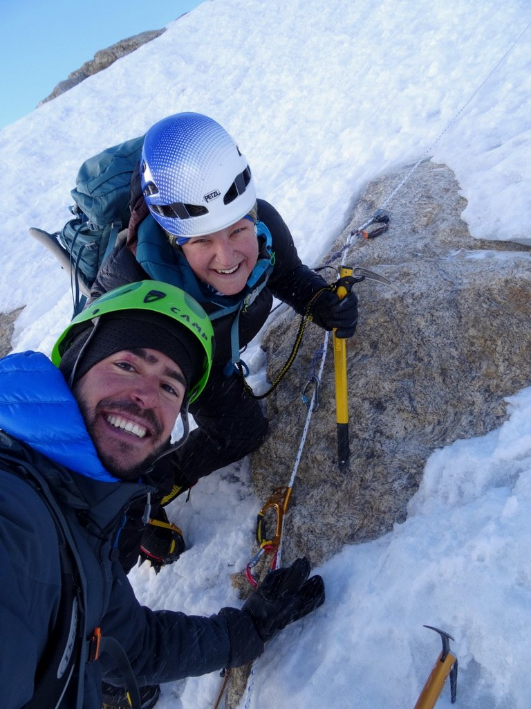
Hochtour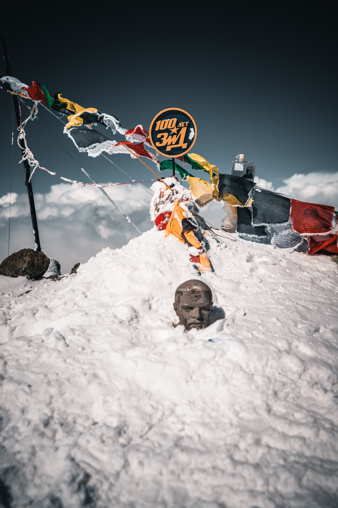
Tour mit Ngima Grimen Sherpa (selig) zum Singu Chuli, 6501 m. Aus einer Reise wächst etwas Dauerhaftes: Höhenbergsteigen als karitativer Verein.
2014: Offizielle Erstbesteigung des Nangamari I (6547 m) durch Remo D., David B. und Hira Gurung. Geplant und durchgeführt durch uns.
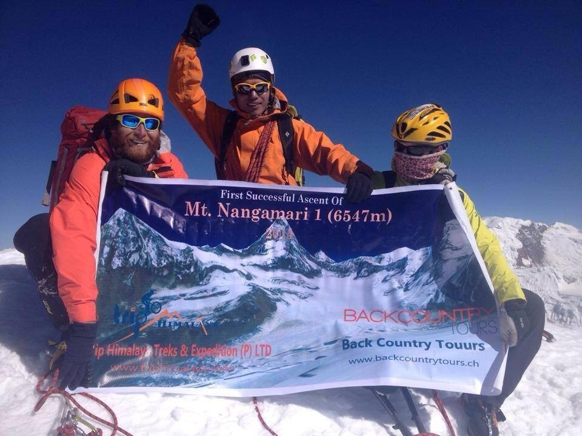
Nangamari I · 6547 m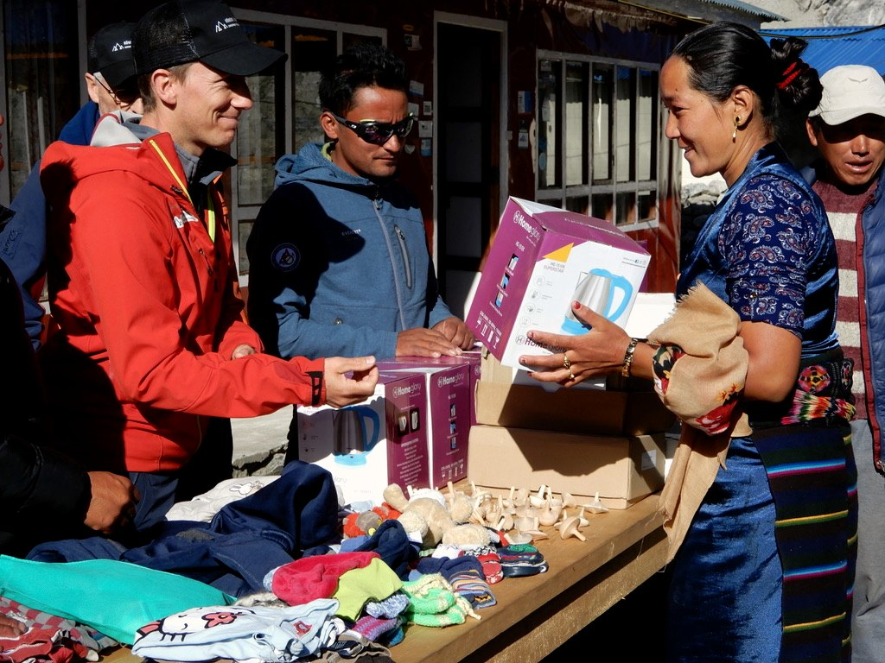
Elbrus2012 Normalroute
2014 Nordseite
2015 erneut zurück.
Erstbesteigungsversuch am Yaupa (6422 m), 2017 die Rückkehr: derselbe Berg, neue Erfahrung.
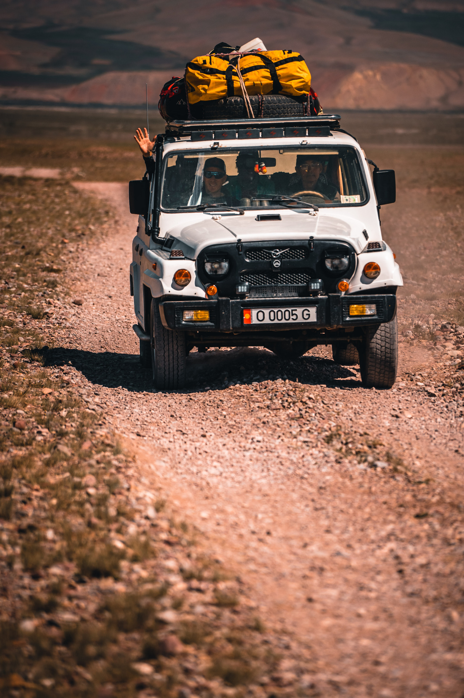
Yaupa 6422 m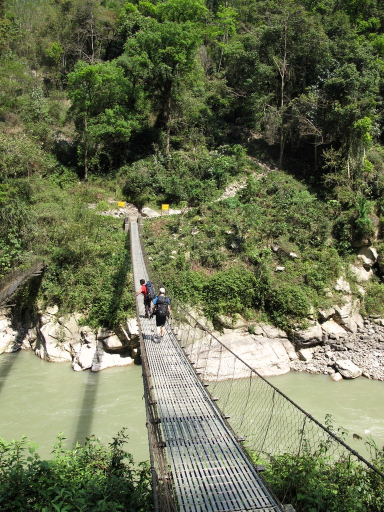
Weltrekordversuch Bike – längster Downhill. Geplant, nicht durchgeführt.
Skitouren zwischen Vulkanen – weit, wild und einsam.
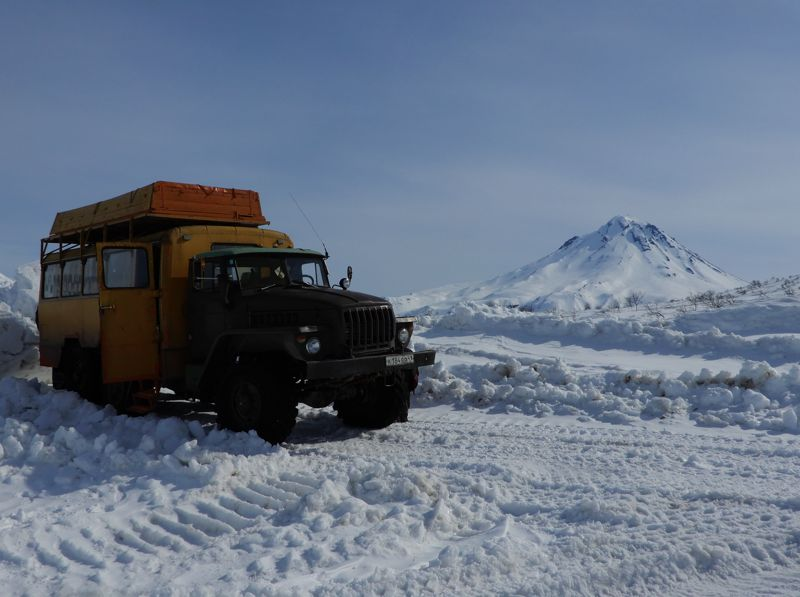
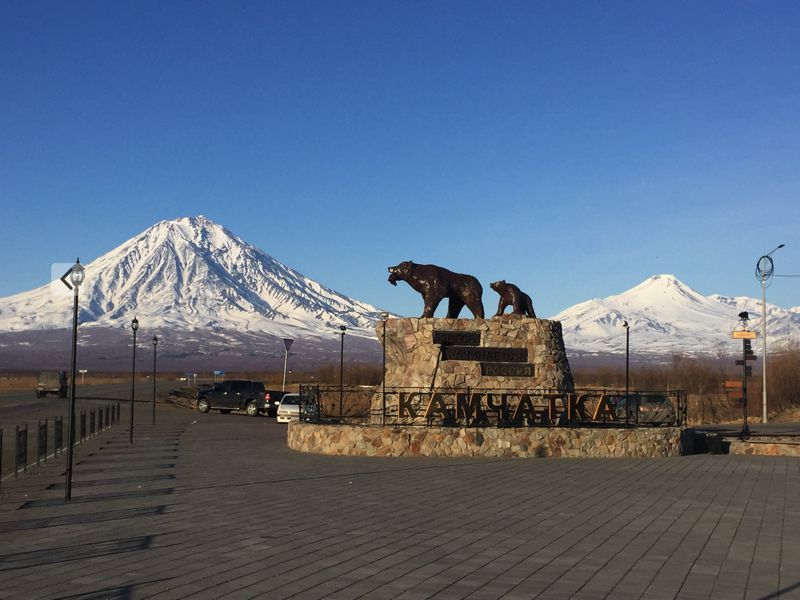
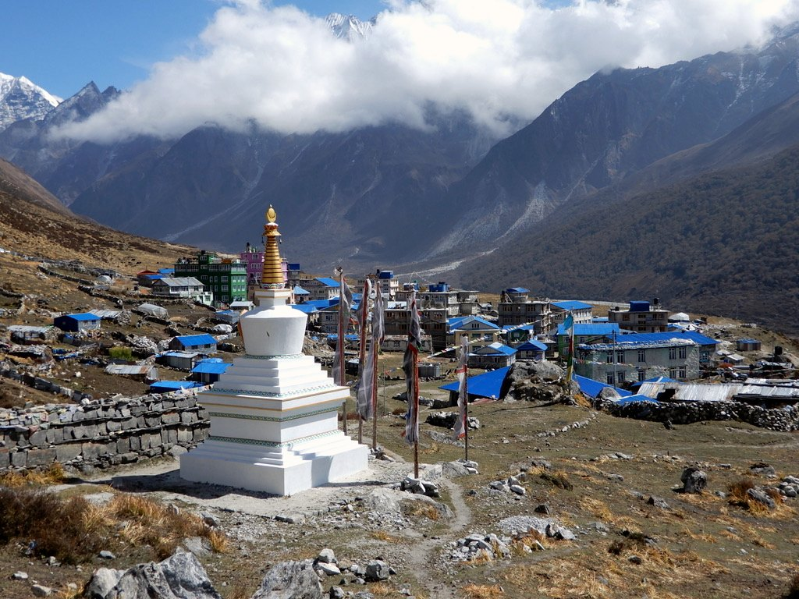
Langtang2018 Langtang. 2019 erneut Langtang und weiter in den Chitwan Nationalpark. Berge und Begegnungen gehören zusammen.
Gasherbrum I, 8080 m. Grosse Berge, grosse Herausforderungen. Teamgeist, Respekt und Demut.
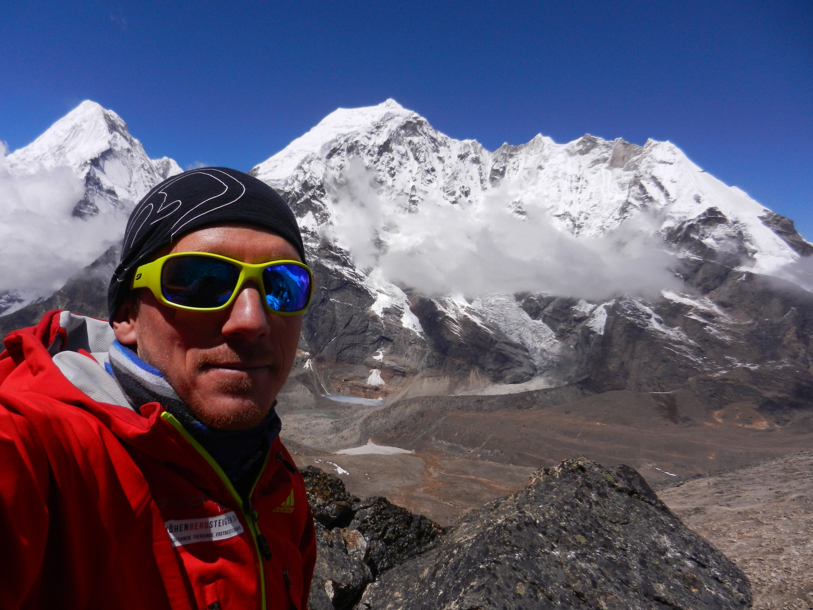
Gasherbrum IEine neue Herausforderung am Pik Lenin. Grosse Höhe, anspruchsvolle Bedingungen und ein intensives Teamerlebnis.
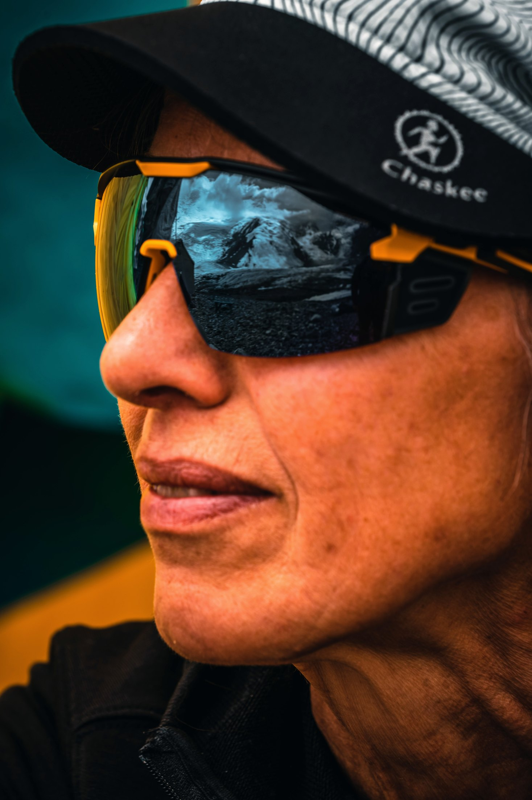
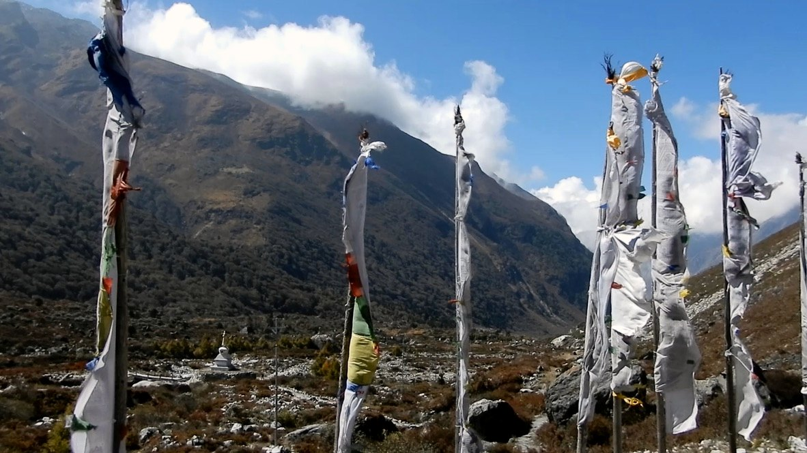
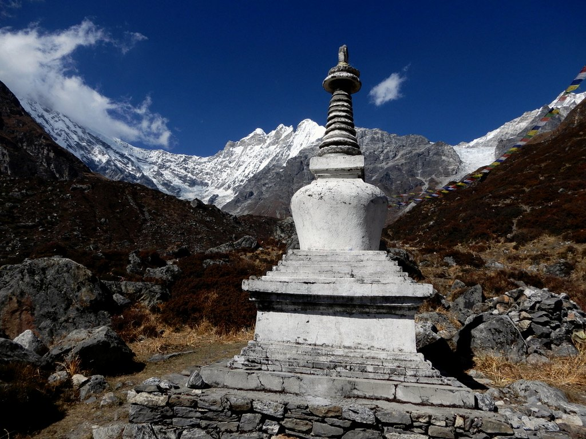
Wieder Nepal. Nicht um Gipfel zu sammeln, sondern um Landschaften, Menschen und Geschichten zu erleben.
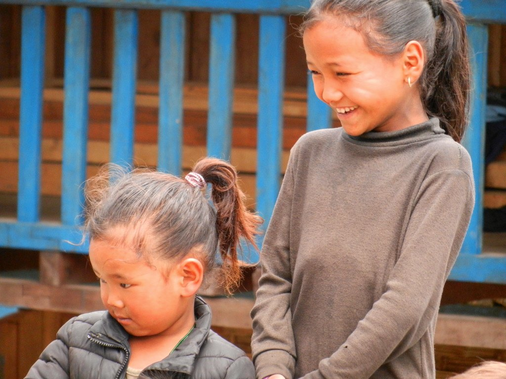
Die Gewinne aus unseren Reisen fliessen in konkrete Projekte vor Ort – Bildung, Gesundheit und nachhaltige Entwicklung.